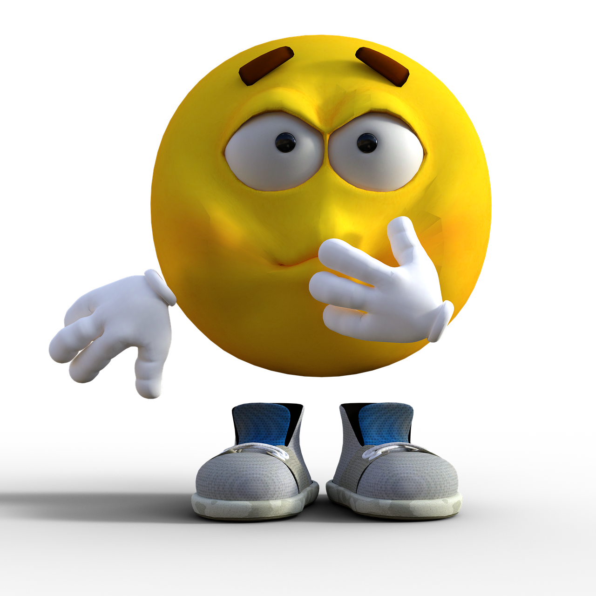

As niche as the previous image, but I find this one funnier. The exaggerated look of worry and the hand over the mouth gets a chuckle out of me every time I see it. The only use I can think of for this image is when you see someone getting destroyed in an argument, being embarrassed, or being hurt badly.
